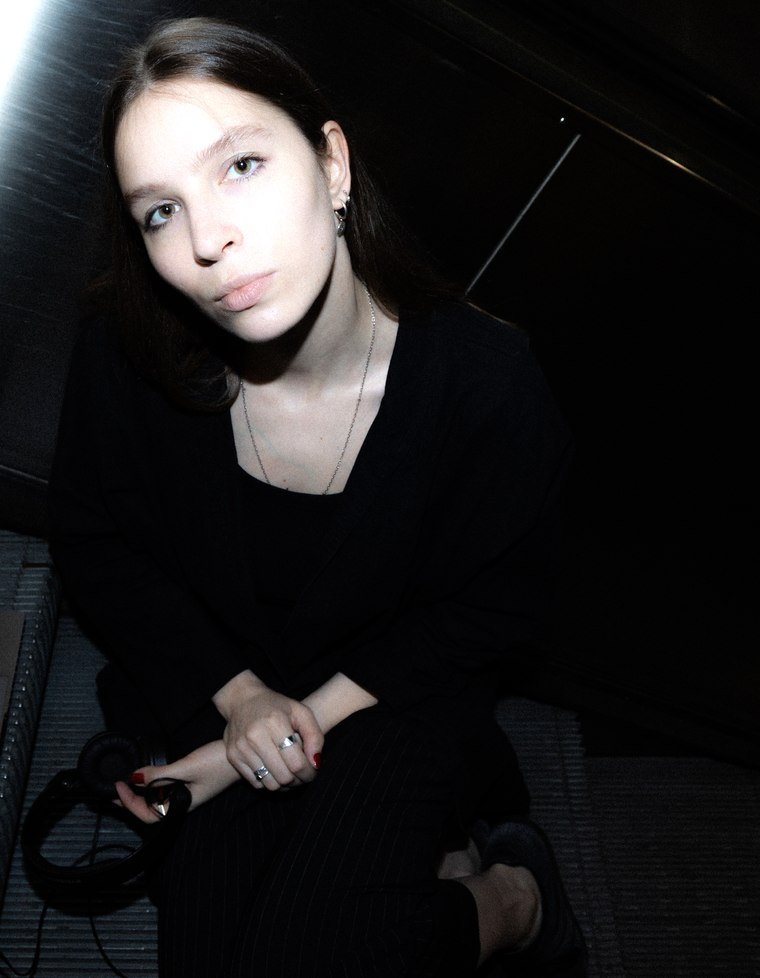

I'm a Latvian sound artist and performer, currently based in Brussels, Belgium. I have a background spanning from classical piano training and electroacoustic composition to live coding and DJ scene. Through my practice I've developed a distinctive approach to experimental electronic music that prioritises open-source tools. Through contemplation on digital obsession, creative coding, spatial sound design, and improvisational practice, I excavate the relational qualities of sonic environments, to reveal how digital processes can articulate deeply human experiences.